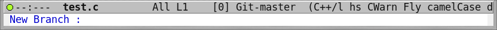
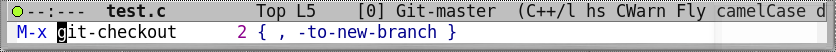
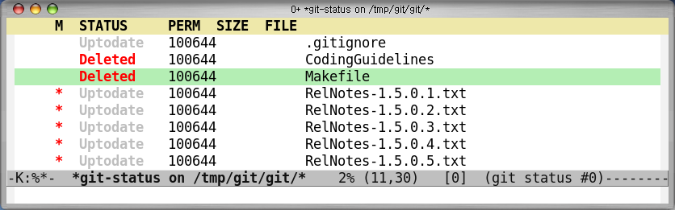

(add-to-list 'load-path "/home/tsgates/Skills/git/git-emacs-1.0") (require 'git-emacs)
| git-config-init command |
| Automatically set current user.name & user.email |
| Run 'git-clone' |
| Move directory |
| Select the directory to be cloned |
|
| Select repository |
| Start to clone from repository |
| All things done |
| Init from archive |
| Selecting archive file |
| Then, setting config user.name and user.email |
| Inital commit log |
| After commiting |
| Open the file |
| After saving the changes |
| Commit your changes after editing log |
("modified -> commmit" & "unmerged -> merge" & "unknown -> add", etc)
After commit
| History view |
| History browsing |
| Display branch list |
|  |
| After pressing 'c', input the new name of the branch |
| Select the branch you want to base on |
| Reload current buffer |
 |
| Check see if switched to the new branch |
Switch to other branch after selecting branch
Generate automatic commit log
Finally switched to 'mater'
Delete 'new-branch' in 'git-branch'
Finally delete a 'new-branch'
Launching gitk in emacs
| Create new tag |
| Input tag name |
| All things done |
|  |
| Checking out |
| Checking out to new branch |
| Checking out to new branch |
| Input the new branch name |
| Based on what? |
| Ok on new 'wild-idea' branch |
| Run 'git-diff' |
| Select diffing target |
| Select revision |
| Diffing with ediff |
| Diffing against HEAD~2 |
| Run 'git-merge' |
| Select the branch to be merged |
| After merge, it will launch git-status mode |
| 3 way merge similar to famous 'psvn.el' |
| Return to the merged 'test.c' |
| Git cloned directory right after cloning |
| Expanding tree or open file |
Git naive command
- '.' : git command
| Rename on marks or current item |
| After renaming all! |
| Regular expression marking |
|  |
| After marking with regexp "RegNotes.*" |
| Delete the selected files |
| After deleting |
| Select files you want to ignore |
| After ignoring |
| Switching branch |
| After switching branch |
| Open in blame mode |
| Summary the view |